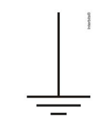

Física — Lista 03 — Problema 74 (ENEM PPL 2012)
Problema 74:
111. (ENEM PPL 2012)
No manual de uma máquina de lavar, o usuário vê o símbolo:

Este símbolo orienta o consumidor sobre a necessidade de a máquina ser ligada a
Solução (interativa):
1) Esse símbolo representa a conexão de:
2) Sua função principal é:
Assinale a alternativa correta:
A
um fio terra para evitar sobrecarga elétrica.
B
um fio neutro para evitar sobrecarga elétrica.
C
um fio terra para aproveitar as cargas elétricas do solo.
D
uma rede de coleta de água da chuva.
E
uma rede de coleta de esgoto doméstico.